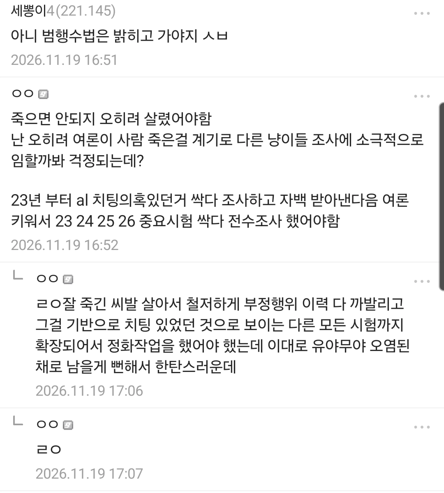

ㄹㅇ

ㄹㅇ
중극적은요
자극적으로 갑시다
추측만 할뿐 구체적으로 어떤 방법으로 행했는지의 진실을 밝힐수없게되었으니 그것도 참..
구속수사할 수도 없고
1년반~ 길어야 2년으로 AI도입을 보는데 저 의혹이 파헤쳐져서 3년전부터 가능했다면
파급력이 훨씬 커지긴할듯
방법이야 세무냥이 언더일거같은데 전수조사할지는 모르겠네
뭐 구매내역, ai사용내역보면 충분히 알수는 있겠지만 공소권 없어져서 수사자체가 중단될테니 뭐....
뉴스 떳는데 사건이 사건인지라 계속 수사할 예정이라고함
그러면 수법 아는건 어렵지는 않을듯
경찰 관계자는 “실체적 진실 확인을 위해 계속 수사를 이어나갈 예정”이라고 밝혔다. 통상 수사기관은 피의자가 사망할 경우 ‘공소권 없음’으로 사건을 종결하지만, 이씨를 둘러싼 의혹이 개인에 대한 처벌을 넘어 시험 공정성을 둘러싼 의구심과 맞닿아 있다고 판단한 것으로 풀이된다.
일단 저번 수능은 죄다 검수한다더만
수사를 계속 한다 던데. 사회 혼란을 끼친것과는 별개로 뭔가 좀 허무하긴 하더라. 저새끼 그거 하는거 아니야? 하는 사람들 많았잖아. 근데 결국 진짜 했음...
죽음은 도망이라고 생각하는데
이건ㄹㅇ
세무냥이 처럼 나만 좆될수 없지 하면서 다 같이 죽자할줄 알았는데 그냥 저승런을 해버렸네
리트냥이가 안타깝진 않음. 다만 그의 부모가 안타까울뿐
만약 이용했던 중국 치팅업체 때문에 죽음당한거라면?
다음 냥이 드가자~
음 맞는말임 다한뒤죽여도 늦지않지
저 앞의 수능은 ai영역이 아닐수도 있겠다는 생각도 들었음. 누군가 공부 잘하는 친구놈이 같이 풀면서 신호를 줬다던지. 진짜 조력자가 있었던거 아니었을까.
이제 소극적으로 변하긴 할듯